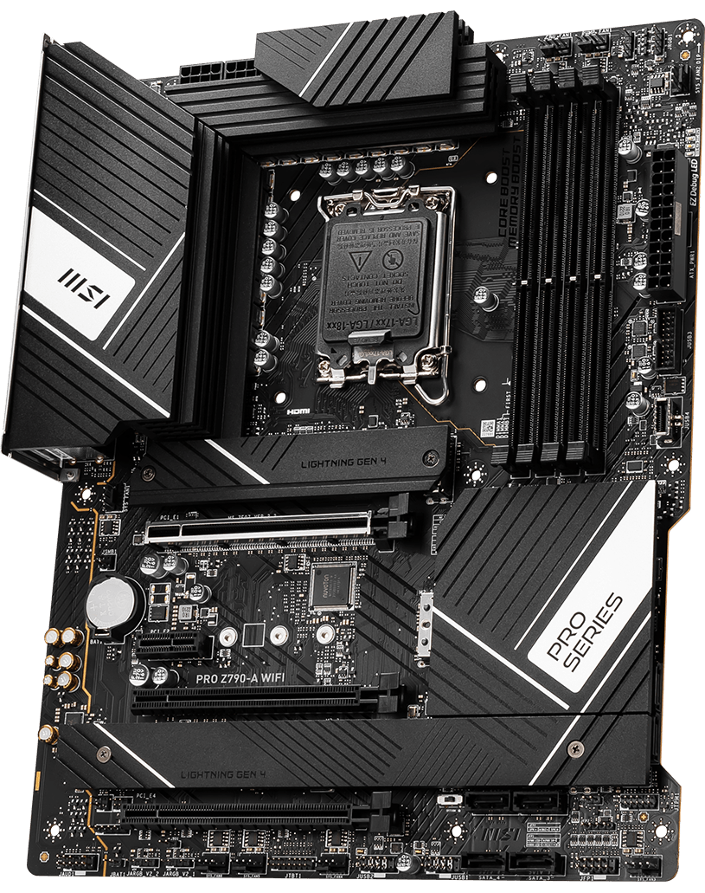

Yüksek performans, geniş bağlantı seçenekleri ve profesyonel kullanım için optimize edilmiş güçlü çözüm.
| Özellik | Değer |
|---|---|
| Soket | LGA1700 (Intel 12./13./14. Nesil) |
| Chipset | Intel Z790 |
| RAM | 4x DDR5 Slot |
| PCIe | PCIe 5.0 x16 + PCIe 4.0 |
| Depolama | 4x M.2 + 6x SATA |
| Ağ | Wi-Fi 6E + 2.5G LAN |